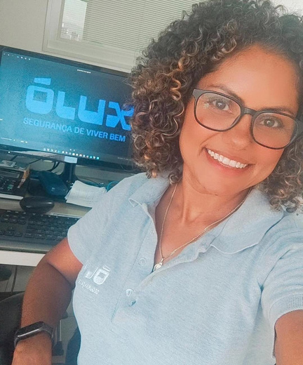
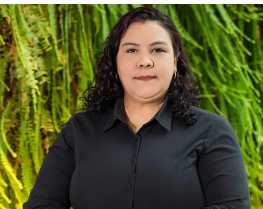
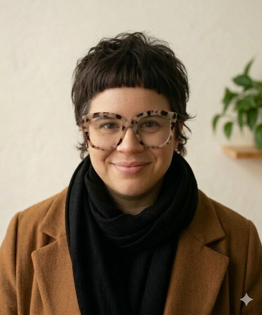
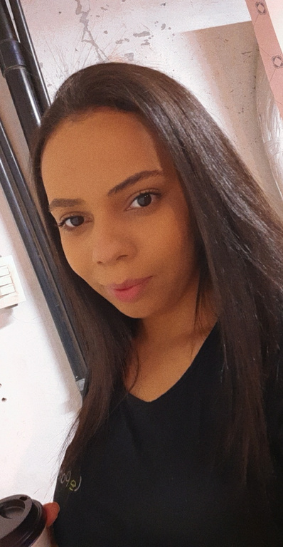
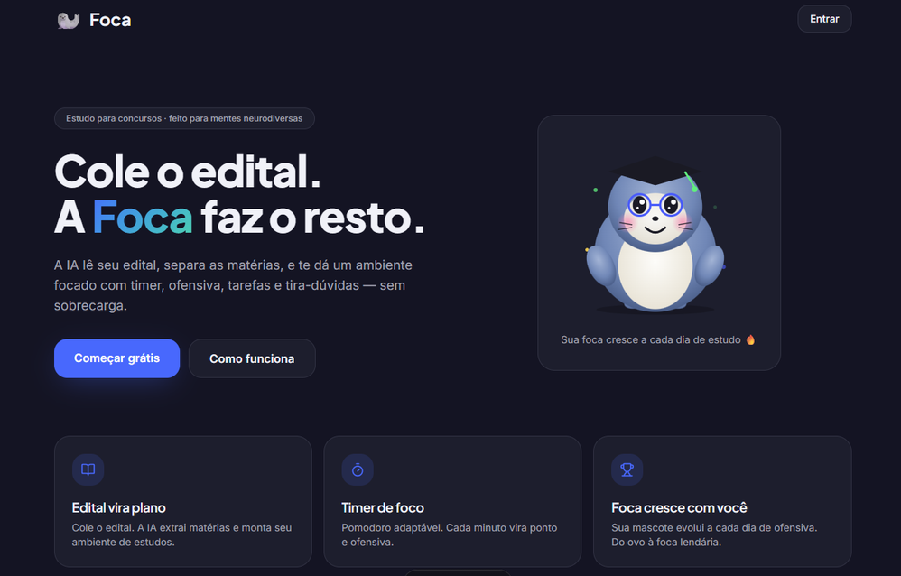
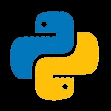
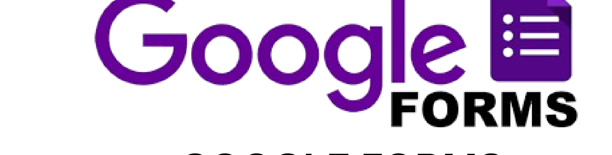
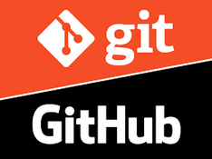

O FOCA é um assistente virtual de estudos para concursos públicos que tem como objetivo organizar a rotina e criar estratégias de estudo eficazes para pessoas com TDAH.

CENÁRIO E MOTIVAÇÃO
A preparação para concursos exige uma rotina longa e exaustiva. Para quem tem TDAH, o excesso de conteúdo e a falta de estrutura geram sobrecarga cognitiva, desorganização e dificuldade de manter o foco.
Faltam ferramentas que organizem editais extensos de forma adaptada ao TDAH. O FOCA nasce para transformar esse conteúdo em um plano de estudos claro, com foco e constância.
Concurseiros com TDAH que buscam uma jornada de estudos mais leve, organizada e inclusiva.
Desenvolver um site que funcione como assistente virtual de aprendizagem, oferecendo recursos adaptados a concurseiros com TDAH.
Como foi feita a pesquisa:
Qualitativa e descritiva.
Técnicas e instrumentos:
Google Forms (perguntas abertas e fechadas).
Público-alvo:
50 pessoas com TDAH, entre concurseiros e estudantes.
Idade: 18 a 50 anos.
Período de coleta: Maio de 2026.
- Diagnóstico tardio: a maioria tem entre 25 e 34 anos; mais de 78% só descobriram o TDAH na idade adulta.
- Apoio médico: 73% dependem de medicação (ex.: Ritalina/Venvanse) para conseguir estudar.
PRINCIPAIS BARREIRAS
*Cada participante podia indicar mais de uma barreira.
ESTRATÉGIAS QUE FUNCIONAM NA PRÁTICA
- Estudo ativo: responder questões e simulados é o método mais eficaz (85% de preferência).
- Estímulo visual: mapas mentais e flashcards funcionam melhor do que leituras longas de PDFs.
- Tempo adaptado: ciclos curtos de foco (Técnica Pomodoro) para evitar a dispersão.
- Fatores críticos: noites de sono regulares (essenciais para o efeito do remédio) e ambiente sem distrações/celular.
- Login de usuário
- Resumo de editais
- Notificações
- Histórico de atividades
- Configuração de usuário conforme o perfil e a especificidade
- Velocidade de resposta
- Disponibilidade
- Segurança
- Usabilidade
- Escalabilidade
- Cadastro de usuário
- Senha com no mínimo 8 caracteres
- Cadastro de e-mail
- Cancelamento de conta



Este site se encontra em desenvolvimento.
Em breve será apresentado de forma completa.